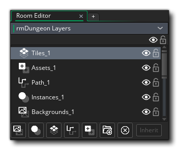
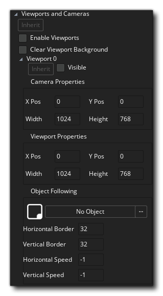
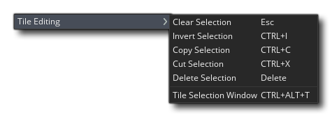

Im Raum-Editor erstellen Sie Ihre Spielräume. Jedes Spiel benötigt mindestens einen Raum, in dem du Instanzen, Sprites, Kacheln, Pfade und Hintergründe platzieren kannst. Jedes dieser verschiedenen Assets kann auf einer eigenen Ebene platziert werden, die im Layers-Editor beliebig angeordnet werden kann. Aufgrund der Komplexität des Raumeditors geben wir Ihnen zunächst einen kurzen Überblick über die wichtigsten Funktionen, und dann finden Sie detailliertere Informationen in den unten aufgeführten Abschnittsüberschriften.
Wenn Sie eine Raumressource erstellen, können Sie mit der rechten Maustaste klicken  darauf im Ressourcenbaum, um das Raummenü zu öffnen. Dadurch können Sie untergeordnete Räume erstellen (siehe Vererbung unten), die Raumeigenschaften zum Ändern öffnen, eine neue Ressourcengruppe hinzufügen, um die Räume besser zu organisieren, den Raum umbenennen oder löschen. Beachten Sie, dass Sie einen Raum im Ressourcenbaum nach oben oder unten ziehen und ziehen können, um ihn neu zu positionieren, oder einen Raum auf einen anderen ziehen, um ihn optisch an diesen Raum anzuhängen (er wird normalerweise unter dem anderen Raum eingerückt angezeigt) Sie möchten die Vererbung von Eltern / Kindern anzeigen) oder ziehen Sie sie in einen Gruppenordner, um sie dort hinzuzufügen.
darauf im Ressourcenbaum, um das Raummenü zu öffnen. Dadurch können Sie untergeordnete Räume erstellen (siehe Vererbung unten), die Raumeigenschaften zum Ändern öffnen, eine neue Ressourcengruppe hinzufügen, um die Räume besser zu organisieren, den Raum umbenennen oder löschen. Beachten Sie, dass Sie einen Raum im Ressourcenbaum nach oben oder unten ziehen und ziehen können, um ihn neu zu positionieren, oder einen Raum auf einen anderen ziehen, um ihn optisch an diesen Raum anzuhängen (er wird normalerweise unter dem anderen Raum eingerückt angezeigt) Sie möchten die Vererbung von Eltern / Kindern anzeigen) oder ziehen Sie sie in einen Gruppenordner, um sie dort hinzuzufügen.
Beachten Sie, dass der Raumeditor selbst ein Arbeitsbereich ist und Sie auf diese Schaltfläche klicken können  auf der Registerkarte und ziehen Sie es aus dem Hauptfenster in ein neues Fenster - zum Beispiel in einer anderen Anzeige. Sie können es auch wieder in das Hauptfenster einfügen, indem Sie die Registerkarte an den Anfang der IDE ziehen und die Maustaste loslassen.
auf der Registerkarte und ziehen Sie es aus dem Hauptfenster in ein neues Fenster - zum Beispiel in einer anderen Anzeige. Sie können es auch wieder in das Hauptfenster einfügen, indem Sie die Registerkarte an den Anfang der IDE ziehen und die Maustaste loslassen.
Schnittstelle
Die Benutzeroberfläche für den Raumeditor ist einfach zu navigieren und in verschiedene Abschnitte unterteilt. Die angedockten Teile des Editors - die Raumeigenschaften und der Ebeneneditor sowie die verschiedenen Ebeneneigenschaften - können ebenfalls aus dem Dock entfernt werden, indem sie einfach in den Arbeitsbereich gezogen und wieder in die Docks eingefügt werden wieder durch Ziehen an die Seiten oder den unteren Rand des Arbeitsbereichs.

Der Raumeditor platziert die Dinge auf Ebenen im Raum. Jede Ebene hat eine diskrete "Tiefe", wobei diejenigen, die am unteren Ende der Liste im Ebenenfenster erscheinen, unter den Ebenen erscheinen, die in der Nähe der obersten Ebene erscheinen.
WICHTIG! Es gibt eine minimale und maximale Ebenentiefe von -16000 bis 16000. Alles, was sich auf einer Ebene außerhalb dieses Bereichs befindet, wird nicht gezeichnet, obwohl alle Ereignisse weiterhin normal ausgeführt werden.Ebenen werden durch Klicken erstellt
die entsprechende Schaltfläche für den Typ der Ebene, die Sie erstellen möchten:
Instanz - Dieser Layertyp enthält alle Instanzen für dein Spiel
Kachel - Diese Art von Ebene dient zum Zeichnen von Sprites als Kachelsätze
Pfad - dieser Layer enthält Pfaddaten (Sie können nur einen Pfad pro Layer haben)
Asset - diese Layer-ID für die Platzierung von visuellen Assets (z. B. Sprites)
Hintergrund - Dieser Layertyp definiert einen Hintergrund, bei dem es sich im Wesentlichen um eine einzelne Farbe oder ein Bild handelt, das gezeichnet wird
Sie können auch einen Ebenenordner mithilfe der Ordnerschaltfläche erstellen
Hier können Sie ausgewählte Ebenen zusammen gruppieren und die ausgewählten Ebenen mit der Schaltfläche "Löschen" löschen . Auf jeden dieser Schichttypen wird hier näher eingegangen.
Beachten Sie, dass Sie die Vererbung für den Ebeneneditor umschalten können, was sich auf die Ebenenreihenfolge und Sichtbarkeit auswirkt. Die Sichtbarkeit selbst kann durch Klicken auf das Augensymbol eingestellt werden
neben jeder der Ebenen, oder Sie können klicken
Das Eigenschaftenfenster der Raumebene ändert sich abhängig von der aktuell ausgewählten Ebene im Ebeneneditor. Jedes Fenster hat verschiedene Eigenschaften und Listen und Sie können grundlegende Details bearbeiten, wie die Ebene angezeigt wird und was tatsächlich auf der Ebene ist. Bitte sehen Sie hier für weitere Details.
Die Raumeigenschaften sind in die folgenden drei Abschnitte unterteilt:
Im Abschnitt Raumeinstellungen können Sie den Vererbungsschalter für die Einstellungen festlegen sowie den Raum benennen und angeben, ob der Raum persistent ist oder nicht. Wenn Sie einen Raum verlassen und später in denselben Raum zurückkehren, wird dieser Raum normalerweise auf seine ursprünglichen Einstellungen zurückgesetzt. Dies ist in der Regel für die meisten Spiele in Ordnung, aber es kann nicht sein, was Sie wollen, zum Beispiel ein RPG oder ein nicht-lineares Spiel, wo Sie kommen und gehen zwischen Räumen und haben sie so sein, wie Sie es das letzte Mal verlassen. Wenn Sie das Kästchen mit der Bezeichnung Persistent markieren, wird genau das gemacht. Der Raumstatus wird gespeichert und wenn Sie später zu ihm zurückkehren, wird er genauso sein, wie Sie ihn verlassen haben. Er wird nur auf den Startzustand zurückgesetzt, wenn das Spiel zurückgesetzt wird. Beachten Sie, dass es eine Ausnahme gibt - wenn Sie bestimmte Objekte als persistent markiert haben, bleiben Instanzen dieses Objekts nicht im Raum, sondern bewegen sich in den nächsten Raum.
Danach haben Sie die Möglichkeit, Display Buffer zu löschen. Diese Option ist ähnlich wie die vorherige, nur füllt sie den Hintergrundpuffer mit einer Farbe. Wenn Sie wissen, dass die Ansichten immer den gesamten Bildschirm abdecken oder dass Sie einen Vollbild-Hintergrund zeichnen, können Sie dies abwählen (wodurch ein Redraw gespeichert wird und somit zur Optimierung Ihres Spiels beiträgt), aber Sie Überlappende Ansichten, die, wenn auf dem Bildschirm Freiräume bleiben, oder Ihr Hintergrund Transparenz hat, sollten Sie dies überprüfen, so dass der Bereich, wo es keine Ansicht gibt, mit der Zeichenfarbe Ihrer Wahl gefüllt werden. Zurzeit kann diese Farbe nur mit Hilfe von Code eingestellt werden window_set_colour().
HINWEIS: Wenn Sie eine automatische Korrektur des Seitenverhältnisses verwenden (wie in den Spieloptionen eingestellt ), sollten Sie diese Option immer aktivieren, da Sie sonst merkwürdige Effekte über den "Briefkasten" erhalten, in den Ihr Spiel gezogen wird. Wenn Sie dies nicht verwenden Wenn Sie diese Option aktivieren, können Sie dies deaktivieren und die Leistung Ihres Spiels steigern (besonders auf Android und anderen mobilen Plattformen). Darunter sehen Sie die Liste der verfügbaren Ansichten (Sie können maximal acht definieren) mit den Informationen darüber, wo diese Ansichten gezeichnet werden sollen, die in den unteren Feldern enthalten sind. Zunächst müssen Sie angeben, ob die Ansicht sichtbar sein soll, wenn der Raum startet, indem Sie das entsprechende Kontrollkästchen aktivieren. Wenn Sie Ansichten verwenden möchten, stellen Sie sicher, dass am Anfang jedes Raums mindestens eine Ansicht sichtbar ist. Sichtbare Ansichten werden in der darüber liegenden Ansichtsliste fett dargestellt.Ein Raum muss eine Größe haben, die durch die Werte definiert wird, die Sie für seine Breite und Höhe in Pixeln eingegeben haben. Sobald dies geschehen ist, können Sie den Erstellungscode hinzufügen, falls Sie ihn benötigen. Der Erstellungscode wird über die Schaltfläche am unteren Rand hinzugefügt (zusammen mit dem erben-Schalter, um anzugeben, ob der Raum seinen Erstellungscode erben soll oder nicht). Wenn Sie darauf klicken, wird ein Code-Editor geöffnet. Mit diesem Editor können Sie Funktionen und Code eingeben, die am Anfang des Raums nach dem Erstellungs-Ereignis aller Instanzen, aber vor ihrem Raum-Start-Ereignis ausgeführt werden. Dieser Code wird nur beim ersten Betreten eines Raums ausgeführt, wenn der Raum als dauerhaft markiert ist und nachfolgende Besuche nicht ausgeführt werden.
Mit der letzten Schaltfläche in den Raumeinstellungen können Sie das Fenster zur Erstellung von Instanzen öffnen:
In diesem Fenster werden alle Instanzen im Raum in der Reihenfolge aufgelistet, in der sie erstellt werden (von oben nach unten). Wenn Sie möchten, dass eine bestimmte Instanz vor einer anderen Instanz erstellt wird, können Sie einfach auf klicken
Kameraansichten bieten einen Mechanismus zum Zeichnen verschiedener Teile Ihres Raums an verschiedenen Stellen auf dem Bildschirm oder zum Zeichnen nur eines Teils Ihres Raums, um den gesamten Bildschirm abzudecken. Zum Beispiel folgt in den meisten Plattform-Spielen die Kameraansicht dem Hauptcharakter, denn wenn Sie den gesamten Level auf dem Bildschirm sehen könnten, wäre Ihr Charakter zu klein um ihn zu sehen und es würde keine Überraschungen für den Spieler geben. Kameraansichten können auch in Mehrspieler-Koop-Spielen verwendet werden, da sie Ihnen die Möglichkeit bieten, eine Split-Screen-Konfiguration zu erstellen, bei der in einem Teil des Bildschirms ein Spieler und in einem anderen Teil der andere Spieler angezeigt wird. Ein weiteres Beispiel sind Spiele, in denen ein Teil des Raums scrollen soll (z. B. mit dem Hauptcharakter), während ein anderer Teil fixiert ist (z. B. ein Statusfeld). Dies alles kann in GameMaker Studio 2 Hilfe von Kameraansichten einfach erreicht werden.
Oben in den Eigenschaften der Ansichten können Sie die Vererbung der Ansicht ein- oder ausschalten. Dann gibt es ein Feld mit der Bezeichnung Viewports aktivieren. Dies muss markiert werden, bevor eine der Ansichten in Ihrem Spiel aktiv sein kann. Das nächste Kontrollkästchen ist Clear Viewport Background, das die Anwendungsoberfläche mit der Fensterfarbe löscht und deaktiviert werden kann, wenn Sie wissen, dass Sie zeichnen, um die gesamte Oberfläche abzudecken.
HINWEIS: Sie können die Vererbung für die drei Hauptansichts-Porteinstellungen ein- oder ausschalten und dann die Vererbung für jede einzelne Kameraansicht ein- oder ausschalten.Eine Kameraansicht wird durch zwei verschiedene Sätze von Werten definiert, die Kameraansicht selbst und der Port auf dem Bildschirm, auf dem diese Ansicht gezeichnet werden soll. Dies kann manchmal Verwirrung stiften. Lassen Sie uns das ein wenig erklären, bevor wir erklären, wie wir sie definieren:
- Die Kamera: Ein Punkt innerhalb des Raums, der verwendet wird, um festzulegen, wie der Raum auf dem Bildschirm angezeigt wird (dies ist ein abstrakter Punkt im Raumeditor und seine Position wird automatisch basierend auf den Einstellungen für Ansicht und Ansichtsport festgelegt)
- Die Ansicht: Was die Kamera sieht, basierend auf der Position, Projektion und Drehung der Kamera
- Der View Port: Der Bereich des physischen Bildschirms, auf dem die Kameraansicht angezeigt wird
Dies bedeutet beispielsweise, dass Sie eine 640x480-Kameraansicht in Ihrem Raum haben können, und legen Sie dann den Anschluss auf 320x240 fest, wodurch die Ansicht auf diesen Größenbereich des Bildschirms skaliert wird. Sie können auch dasselbe tun und Stellen Sie die Ansicht auf einen kleineren Wert und den Port auf einen größeren Wert ein. Dadurch wird das Bild an die Portgröße angepasst und auf dem Bildschirm größer angezeigt als es ist. Auf diese Weise können Sie eine Bildschirmgröße (Port) beibehalten, während Sie die Kameraansicht ändern, um mehr oder weniger Raum im selben Bildschirmbereich anzuzeigen.
Die Kameraansicht ist immer als ein rechteckiger Bereich im Raum definiert, in dem Sie die Position der oberen linken Ecke, die Breite und die Höhe dieses Bereichs angeben. Dann müssen Sie angeben, wo dieser Bereich im Fenster auf dem Bildschirm angezeigt wird, indem Sie den Ansichtsport definieren. Geben Sie hier wiederum die Position der oberen linken Ecke und die Größe an (beachten Sie, dass für die linke obere Ecke alles andere als 0,0 gilt) kann seltsame Ergebnisse geben). Sie können mehr als einen Port haben und sie können sich überlappen, in diesem Fall werden sie in der angegebenen Reihenfolge übereinander gezeichnet. Bitte beachten Sie, dass der gesamte Bildschirmbereich immer als ein rechteckiger Bereich definiert ist, sodass Ihre Ports auch bei Versatz ein Rechteck bilden, wobei alle leeren Bereiche durch die Fensterfarbe ausgefüllt werden. Unter diesen Umständen sollten Sie immer Clear haben Display Buffer checked, sonst erhalten Sie in den Zwischenräumen zwischen Ports merkwürdige Artefakte.
ANMERKUNG: Auf Windows8 SurfaceRT-Geräten gibt es ein Canvas-Limit von 2048x2048, was bedeutet, dass der Zeichenbereich nicht über diese Dimensionen hinausgehen kann (weder mit Ansichten noch durch direktes Setzen des Spielfensters), da sonst Ihre Spielgrafiken beschädigt oder verschlechtert werden.Die Option " Object Following " dient dazu, dass die Ansicht einem bestimmten Objekt "folgen" soll (dh die Ansicht, auf die fokussiert wird). Um dies zu tun, müssen Sie klicken
Schließlich können Sie die Geschwindigkeit angeben, mit der sich die Ansicht bewegt, wenn das Zeichen die Pufferzone erreicht hat, und dies hat einen Standardwert von -1. Dieser Standardwert ist im Grunde "sofort" und bedeutet, dass die Ansicht in dem Moment, in dem sich das Folgeobjekt außerhalb der horizontalen Grenze oder der vertikalen Grenzpufferzone befindet, zur aktuellen Position springt. Nun, das ist nicht immer was Sie wollen und so können Sie die vertikale und horizontale Scrollgeschwindigkeit für die Ansicht einstellen, indem Sie die Werte auf etwas anderes als -1 setzen. Beachten Sie, dass ein Wert von 0 dazu führt, dass sich die Ansicht überhaupt nicht bewegt, und jeder andere positive Wert gibt an, wie viele Pixel in einem Schritt bewegt werden. Wenn Sie die horizontale Geschwindigkeit auf 5 setzen, folgt die Ansicht dem Objekt mit 5 Pixel pro Pixel Schritt horizontal.
Bevor Sie die eingebauten Physikfunktionen verwenden können, müssen Sie die Option aktivieren Physik am Anfang dieses Abschnitts aktivieren (Sie können die Vererbung dieses Abschnitts auch unabhängig von den übrigen Raumeinstellungen aktivieren). Sobald Sie das getan haben, können Sie mit den Eigenschaften der Physik-Welt fortfahren, die einige Grundeigenschaften sind, die Sie vordefinieren müssen, bevor Ihr Raum physikalischen Instanzen erlauben wird, als solche zu arbeiten. Für eine genauere Kontrolle über die Welt können Sie Code verwenden (siehe - Die Physik-Funktionen für weitere Informationen).
Das nächste, was du tun musst, ist die Gravitation der Welt. Die Stärke und Richtung davon wird als Vektor der x / y-Position berechnet, die Sie um einen (0, 0) -Punkt setzen. Also wird ein x von 0 und ay von 1 die Gravitationsrichtung mit einer Kraft von 1 Meter pro Sekunde als abwärts gerichtet setzen (für eine detailliertere Erklärung siehe - The Physics World: Gravity ). Schließlich müssen Sie das Verhältnis von Pixeln zu Meters für GameMaker Studio 2 als Basis für alle seine physikalischen Berechnungen festlegen. Das liegt daran, dass die Physik-Funktionen mit realen Messungen arbeiten. Deshalb müssen wir diesen Wert einstellen, und Sie sollten diese Einstellung anpassen, bis die durchschnittliche Pixelgröße der Objekte, die Sie verwenden, grob in simulierte physikalische Objekte eines Objekts übersetzt wird geeignete Größe.
Bei bestimmten Layer-Typen werden zusätzliche Werkzeuge oben in der IDE in der Toolbox hinzugefügt (z. B. Kachel-Layer oder Pfad-Layer). Die genauen Werkzeuge werden für den gerade bearbeiteten Layertyp geändert und werden daher in den Abschnitten zu den einzelnen Ebenen erläutert.
Oben im Hauptfenster des Raum-Editors haben Sie ein paar Steuerelemente, um sich mit der Darstellung der Dinge zu befassen. Sie sind:
- Canvas-Raster umschalten
: Dies schaltet das Raum-Editor-Grid ein bzw. aus. Dies ist ein Raster, das GameMaker Studio 2 über den Hauptbereich zeichnet, um es in Abschnitte zu unterteilen, und standardmäßig auf 32 x 32 Pixel eingestellt ist. Wenn Sie jedoch auf das Symbol für das Grid-Menü klicken
Sie werden die Rasteroptionen öffnen:
Mit diesen Optionen können Sie Gitterfarbe und Alpha sowie die Zellenwerte für das Gitter entlang der X- und Y-Achse festlegen. Sie haben hier auch eine Option zum Aktivieren oder Deaktivieren der Rasterfangfunktion (standardmäßig aktiviert). Sie können die Tastaturkürzel verwenden " G " und
+ " G "um die Rastersichtbarkeit bzw. Rasterfang zu aktivieren.
- Steuerelemente für den Leinwandzoom
: Diese Schaltflächen steuern die aktuelle Leinwand-Zoomstufe. Sie können die Ansicht vergrößern oder verkleinern und auf die Schaltfläche klicken
Mit der Schaltfläche wird die Leinwand auf 1: 1 zurückgesetzt, wobei der Raum bearbeitet wird. Sie können auch auf die Schaltfläche Fensteranpassung klicken
um den gesamten Raumbereich in den aktuellen Arbeitsbereich des Editors einzupassen (dies wird je nach Bedarf vergrößert und verkleinert). Beachten Sie, dass Sie mit der Taste auch ein- und auszoomen können
/
und das Mausrad
und drücken
- Zeige Ansichten
: Wenn Sie darauf klicken, wird das Ansichtsrechteck aktiviert oder deaktiviert. Wenn diese Option aktiviert ist, wird ein hervorgehobener Bereich angezeigt, der die verschiedenen Ansichten angibt, die für den Raum aktiviert sind.
- Animationen abspielen
: Wenn Sie Sprites, Assets oder animierte Kacheln hinzufügen, möchten Sie vielleicht wissen, wie diese im Raum selbst aussehen werden, ohne dass Sie kompilieren müssen. Sie können also auf diese Schaltfläche klicken, um alle verschiedenen Animationen zu starten. Wenn Sie erneut darauf klicken, wird die Animation gestoppt.
- Canvas Wählen Sie aus einer beliebigen Ebene
: Wenn Sie auf ein Element im Raumfenster klicken, können Sie standardmäßig nur die Objekte auswählen, die sich auf der gerade bearbeiteten Ebene befinden. Wenn Sie diese Option jedoch aktivieren, können Sie auf ein beliebiges Element klicken und es wird ausgewählt. Ändern der Zielebene auf die Ebene, auf der sich das Element befindet Sie können die Tastenkombination verwenden " P "um dies vorübergehend zu aktivieren (halten" P "aktivieren und freigeben zum Deaktivieren"
Die Mitte des Raumeditorfensters wird mit dem Bereich ausgefüllt, in dem die eigentliche Bearbeitung stattfindet. Hier werden Sie Ihre Instanzen und Assets platzieren, Ihre Kacheln zeichnen oder Ihre Pfade positionieren. Sie können mit dem Mausrad oder den Raumbedienelementen oben ein- und auszoomen und mit der mittleren Maustaste schwenken
+
Beim Erstellen von Asset-Layern oder Instanzen-Layern können Sie das Asset oder die Instanz platzieren, indem Sie es einfach aus dem Ressourcenbaum ziehen und es dort ablegen, wo es positioniert werden soll. Alternativ können Sie ein Asset oder eine Instanz aus dem Ressourcenbaum auswählen und dann gedrückt halten
um die Ressource "in-situ" anzuzeigen, und wenn Sie zusätzlich mit der linken Maustaste klicken
Für Pfade können Sie eine neue Pfad-Ebene und Pfad-Ressource direkt im Raum-Editor erstellen - oder eine neue Pfad-Ressource erstellen und dann wie für eine Instanz in das Haupt-Editor-Fenster ziehen - und dann den Pfad und seine Verbindungen bearbeiten das Editorfenster auch. Für Kachelsätze können Sie sie aus dem Kachelset-Editor "malen".
Beachten Sie, dass Sie mehrere Assets aus derselben Ebene auswählen und verschieben oder löschen können, indem Sie gedrückt halten
Die Statusleiste wird verwendet, um Ihnen kontextspezifische Informationen anzuzeigen. In der Statusleiste wird immer angezeigt, wo sich der Mauszeiger im Raum befindet, aber es werden auch zusätzliche Informationen angezeigt, die auf dem bearbeiteten Layer, dem verwendeten Werkzeug und dem Status dieses Werkzeugs basieren.


Erbe
Vielleicht ist das wichtigste Merkmal des Raumeditors die Vererbung. Vererbung bedeutet, dass Sie einen "Eltern" -Raum erstellen und daraus einen "Kinder" -Raum erstellen können, der alle Eigenschaften des Elternzimmers übernimmt. Dieser Kinderraum ist im Wesentlichen ein Klon des Elternteils und alles darin ist mit dem Elternraum verbunden. Wenn Sie die Ansicht im übergeordneten Element ändern oder eine Kachel verschieben oder Instanzen hinzufügen, wird dies im untergeordneten Raum angezeigt. Außerdem können Sie im Child-Room die Vererbung für bestimmte Layer, Instanzen, Assets oder alles, was sonst noch benötigt wird, selektiv ausschalten. In einem Raum, der Eigenschaften geerbt hat, werden die Erben- Schaltflächen aktiviert, wie in der Abbildung unten gezeigt. Mit ihnen können Sie dann die Vererbung für die angegebene Ebene oder Ressource usw. ein- oder ausschalten. 
Das lässt sich zunächst nur schwer visualisieren, also schauen wir uns ein Beispiel an: Sie haben ein Zimmer mit einer Stadt und einem Schloss in der Mitte. Die Stadt und die Burg werden mit verschiedenen Kachel-Layern gezeichnet und du hast auch Instanzen und Pfade für NPCs, mit denen du herumlaufen kannst. Du willst es so haben, dass im Spiel das Schloss zerstört wird, aber alles andere in der Stadt sieht aus und verhält sich genauso. Sie würden den ursprünglichen Raum mit allem wie gewohnt erstellen und dann einen untergeordneten Raum erstellen, der die übergeordneten Raumebenen erbt. Im Kinderraum würden Sie die Vererbung für die Kachelebene (oder sogar einzelne Kacheln) für den Burgbereich ausschalten und sie würden Kacheln verschieben / hinzufügen / löschen, um den zerstörten Burg-Look zu erstellen. Wenn ein Spieler diesen Raum betritt, bleiben alle Instanzen aus dem Elternraum und alle Kacheln usw. genau gleich, außer denen des zerstörten Schlosses.
Um eine Raumvererbung zu erstellen, wählen Sie einfach den Raum aus, aus dem Sie ein Kind erstellen möchten, und klicken Sie dann mit der rechten Maustaste  . Dies öffnet das Raummenü und dort können Sie Kind erstellen auswählen, um einen neuen Kinderraum zu erstellen. Dies wird erstellt und an den Eltern im Ressourcenbaum visuell angehängt:
. Dies öffnet das Raummenü und dort können Sie Kind erstellen auswählen, um einen neuen Kinderraum zu erstellen. Dies wird erstellt und an den Eltern im Ressourcenbaum visuell angehängt: 
Sie können auch einen beliebigen Raum aus dem Ressourcenbaum in einen beliebigen anderen Raum im Ressourcenbaum ziehen, um ihn zum untergeordneten Element dieses Raums zu machen (oder einen untergeordneten Bereich von einem übergeordneten Bereich zu entfernen und die Vererbung zu unterbrechen). Beachten Sie, dass die Vererbung mehrschichtig ist und Sie einzelne Objekte, Objektgruppen auf einer einzelnen Ebene, Objekteigenschaften oder ganze Räume als erben markieren können und Sie auch von aufeinander folgenden Räumen erben können (so erbt Raum C von Raum B, der in Wenden hat von Raum A geerbt. Wenn Sie ein Basiszimmer erstellen, in dem sich außer der Einrichtung der Ansicht nichts befindet, können Sie beispielsweise alle weiteren Räume als Kinder erstellen. Aber Sie können noch einen Schritt weiter gehen und ein anderes Basiszimmer mit dem Raum "View" als Elternteil erstellen, der die allgemeine GUI-Instanz und die Controller enthält, die in jedem Spielzimmer benötigt werden. Jetzt können Sie Kind - Zimmer davon erstellen und sie werden sowohl die Controller und GUIs vom Elternraum sowie die Ansicht Setup aus dem übergeordneten diesem Raum erben!
Wie Sie hoffentlich sehen können, ist die Vererbung sehr leistungsfähig und Sie können damit eine wesentlich sauberere Raumstruktur erhalten, den Arbeitsablauf beschleunigen und die Zeit, die Sie für die Erstellung und Gestaltung von Räumen aufwenden, optimieren.
Lagen
Zu Beginn wird alles, was in den von Ihnen erstellten Raum fließt, auf einer Ebene platziert. Ebenen können über den Ebenen-Editor hinzugefügt, entfernt und sortiert werden. Sie können verschiedene Arten von Ebenen verwenden, von denen jede über ihre eigenen Optionen und Arbeitsweisen verfügt. Sie sind nicht auf die Anzahl jedes Layer-Typs beschränkt und können mehrere Kachel- oder Pfad-Layer oder Instanz-Layer usw. haben. Jeder Layer-Typ verfügt über ein eigenes Eigenschaften-Fenster, in dem Sie verschiedene Einstellungen vornehmen können der Schichttyp Sie können auch die Sichtbarkeit der Ebenen ändern, wobei unsichtbare Ebenen zur Laufzeit nicht verarbeitet werden (Sie können sie jedoch jederzeit mit der entsprechenden Ebenenfunktion wieder sichtbar machen).
Das Bild oben zeigt den Layer-Editor, wobei die aktuellen Layer oben aufgelistet sind und die verschiedenen Schaltflächen zum Erstellen von Layern im unteren Bereich. Sie können jede Ebene aus diesem Editor umbenennen, indem Sie einen langsamen Doppelklick auf den Namen ausführen (beachten Sie, dass Sie nur Buchstaben und das Zeichen "_" für Namen verwenden können). Sie können auch die Sichtbarkeit ein- oder ausschalten, indem Sie auf klicken Augensymbol  . Wenn der Raum Layer aus einem übergeordneten Raum geerbt hat, können Sie die Vererbung über die Schaltfläche am unteren Rand ändern. Beachten Sie jedoch, dass sich dies auf alle Layer auswirkt. Sie können auch verwenden
. Wenn der Raum Layer aus einem übergeordneten Raum geerbt hat, können Sie die Vererbung über die Schaltfläche am unteren Rand ändern. Beachten Sie jedoch, dass sich dies auf alle Layer auswirkt. Sie können auch verwenden  oder
oder  /
/  und Linksklick
und Linksklick  auf mehreren Ebenen, um sie zum Kopieren oder Löschen auszuwählen (diese Optionen sind über die rechte Maustaste verfügbar)
auf mehreren Ebenen, um sie zum Kopieren oder Löschen auszuwählen (diese Optionen sind über die rechte Maustaste verfügbar)  Speisekarte).
Speisekarte).
Um mit Ihrer Bestellung Schichten und halten sie ordentlich, können Sie Gruppen von Schichten in einer Schicht Ordner erstellen, indem Sie auf das Ordnersymbol klicken  . Sie können auch einen oder mehrere ausgewählte Layer löschen, indem Sie auf die Schaltfläche zum Löschen klicken . Alle Ebenen haben auch einen Tiefenwert, der definiert, wo in der Zeichenreihenfolge diese Ebene platziert wird, wenn der Inhalt in den Raum gerendert wird. Die Ebenen werden von der höchsten bis zur niedrigsten Tiefe gezeichnet, sodass eine Ebene in einer Tiefe von -100 über eine Ebene mit einer Tiefe von 200 gezeichnet wird.
. Sie können auch einen oder mehrere ausgewählte Layer löschen, indem Sie auf die Schaltfläche zum Löschen klicken . Alle Ebenen haben auch einen Tiefenwert, der definiert, wo in der Zeichenreihenfolge diese Ebene platziert wird, wenn der Inhalt in den Raum gerendert wird. Die Ebenen werden von der höchsten bis zur niedrigsten Tiefe gezeichnet, sodass eine Ebene in einer Tiefe von -100 über eine Ebene mit einer Tiefe von 200 gezeichnet wird.
Wenn Sie mit der rechten Maustaste klicken  Auf jeder Ebene erhalten Sie das Ebenenmenü:
Auf jeder Ebene erhalten Sie das Ebenenmenü: 
Hier können Sie das Fenster der Ebeneneigenschaften für die ausgewählte Ebene öffnen, die Ebene löschen, die Ebene umbenennen oder eine Unterebene hinzufügen. Wenn Sie eine Unterebene hinzufügen, erhält die aktuelle Ebene ein "Ordner" -Symbol, das anzeigt, dass Unterebenen angehängt sind, und die neue Ebene wird darunter erstellt, mit der rechten Maustaste. Sie können dann auswählen, dass die Unterebene ihre Eigenschaften von der übergeordneten Ebene erben soll und ob sie die Sichtbarkeit von der übergeordneten Ebene übernehmen soll.
Beachten Sie, dass Sie Ebenen im Fenster nach oben oder unten ziehen können, um sie neu zu ordnen, und Sie können auch mehrere Ebenen auswählen und verschieben  +
+  um von einer Ebene zur anderen zu wählen (einschließlich aller dazwischen liegenden) oder
um von einer Ebene zur anderen zu wählen (einschließlich aller dazwischen liegenden) oder  /
/  +
+  um einzelne Layer einzeln auszuwählen. Wenn Sie die Ebenen oberhalb eines Ebenenordners platzieren, werden sie verschoben und als Unterebenen des Ordners festgelegt, in den Sie sie eingefügt haben. Sie können Ebenen auch sperren, damit sie nicht versehentlich bearbeitet werden können.
um einzelne Layer einzeln auszuwählen. Wenn Sie die Ebenen oberhalb eines Ebenenordners platzieren, werden sie verschoben und als Unterebenen des Ordners festgelegt, in den Sie sie eingefügt haben. Sie können Ebenen auch sperren, damit sie nicht versehentlich bearbeitet werden können.
Sie können eine neue Hintergrundebene hinzufügen, indem Sie auf die Schaltfläche klicken
Wenn Sie eine neue Hintergrundebene erstellen, ist diese standardmäßig leer und zeichnet die definierte Hintergrundfarbe. Wenn Sie dem Hintergrundlayerbild kein Sprite zuweisen, wird dieses stattdessen gezeichnet und Sie können auf das Farbfeld klicken, um den Farbwähler zu öffnen und die verwendete Farbe zu ändern. Wenn Sie ein Sprite auswählen, können Sie die Kacheloptionen aktivieren, um es horizontal oder vertikal zu kacheln oder um das Bild so auszudehnen, dass es den gesamten Raum ausfüllt.
Wenn Sie möchten, dass der Hintergrund in eine Richtung scrollt, können Sie auch die horizontale und / oder vertikale Geschwindigkeit einstellen (in jedem Spielschritt bewegt es sich entlang des angegebenen Zugriffs um die Anzahl der hier eingestellten Pixel), und Sie können auch re -positionieren Sie das Hintergrundbild, indem Sie die x- und y-Versatzwerte einstellen. Sie können auch die Animationsgeschwindigkeit für den Hintergrund festlegen, wenn die von Ihnen ausgewählte Sprite-Ressource mehrere Unterbilder enthält, obwohl diese standardmäßig auf den Wert festgelegt ist, den Sie im Sprite-Editor für das verwendete Bild festgelegt haben. Schließlich können Sie die Tiefe für die Ebene explizit festlegen, obwohl diese wiederum standardmäßig gesperrt ist. Sie können die Ebenenreihenfolge einfach im Ebeneneditor ziehen und neu anordnen, um diesen Wert zu ändern.
Beachten Sie, dass Sie die Vererbung für einen Hintergrund auch in diesem Fenster ändern können, indem Sie auf die Schaltfläche ganz oben klicken.
Sie können eine neue Instanzenebene hinzufügen, indem Sie auf die Schaltfläche klicken
In diesem Fenster wird lediglich eine Liste aller Instanzen angezeigt, die sich derzeit auf der Ebene befinden. Sie können einer Ebene weitere Instanzen hinzufügen, indem Sie den Ressourcenbaum öffnen und dann Objekte von dort in den Raum ziehen. Alternativ können Sie eine Instanz aus der Ressourcenstruktur auswählen und dann drücken und halten
Die Ebenenliste kann durch Klicken auf bestellt werden
Doppelklicken
Standardmäßig hat die Instanz einen Namen wie "inst_38B0BFF", aber dies kann beliebig geändert werden, solange der Name nur alphanumerische Zeichen und den Unterstrich "_" (und keine Leerzeichen) verwendet. Es ist jedoch erwähnenswert, dass der hier angegebene Name (egal, ob Sie einen geben oder den Standardnamen, den die IDE gibt) als a gilt constant und muss daher für die Instanz eindeutig sein. Dies bedeutet auch, dass es in Code n Ihres Spiels verwendet werden kann, um die Instanz zu identifizieren, aber nur, wenn Sie sich im selben Raum wie die Instanz befinden.
Unterhalb des Instanznamens können Sie einstellen, ob die Instanz vom übergeordneten Raum erben soll, das Objekt ändern, von dem Sie möchten, dass es eine Instanz davon ist, oder den Objekt-Editor öffnen, um dort die Eigenschaften zu ändern. Sie können dort auch in einem neuen Fenster den Objekteditor für die Instanz sollten Sie etwas ändern möchten öffnen, und auch Variablen durch das Objekt Variable Fenster überprüfen und bearbeiten (für weitere Informationen über Objektvariablen finden Sie im Abschnitt hier ). Sie können auch die Eigenschaften dieser Instanz ändern, indem Sie eine Farbe für die Überblendung festlegen (standardmäßig weiß) oder sie drehen und spiegeln sowie die Instanz entlang einer oder beiden Achsen skalieren und ihre Position im Raum festlegen.
Schließlich können Sie der Instanz einen Erstellungscode geben, der direkt nach dem Ereigniscode für die Objekterstellung ausgeführt wird und für diese Instanz eindeutig ist (Sie können z. B. eine Variable im Objekt festlegen, die alle Instanzen haben, und sie dann in der Erstellung ändern Code, so dass es ein eindeutiger Wert für eine Instanz ist). Wenn Sie darauf klicken, wird ein Codefenster mit der Instanz verknüpft, in der Sie Funktionen hinzufügen oder Variablen ändern können. Beachten Sie, dass Sie die Vererbung von Erstellungscode unabhängig von der Instanzvererbung ein- oder ausschalten können.
Es ist erwähnenswert, dass jede Instanz auf einer Ebene automatisch für den Export markiert wird, wenn das Spiel erstellt wird. Insbesondere wenn Sie mit Vererbung arbeiten, möchten Sie möglicherweise nicht, dass bestimmte Instanzen im endgültigen Spiel dem Raum hinzugefügt werden (oder Sie haben in jedem Raum eine Debug-Instanz und möchten diese einfach aus dem letzten Spiel ausschließen) ). Wenn dies der Fall ist, wird das Kontrollkästchen "Export" links neben der Instanz in der Liste deaktiviert, damit es nicht als Teil der ausführbaren Datei exportiert wird. Es ist wichtig zu beachten Sie jedoch, dass, wenn Sie einen Code haben, der das Objekt verweist, dann wird das Spiel nicht richtig laufen, so diese Funktion mit Vorsicht verwendet werden.
Sie können eine neue Kachelebene hinzufügen, indem Sie auf die Schaltfläche klicken
In den Kachel-Layer-Eigenschaften können Sie die Vererbung für den Layer ändern, den verwendeten Kachel-Satz ändern und den X- oder Y-Offset für den Layer festlegen, wenn das Layerraster nicht exakt mit der Position (0, 0) ausgerichtet werden soll aus dem Zimmer. Sie können auch die Tiefe einstellen, mit der die Ebene gerendert werden soll (mit einer eigenen Vererbungsschaltfläche), und Sie können diese Tiefe ebenfalls "sperren", wodurch weitere Bearbeitungen verhindert werden.
Wenn das Fenster mit den Ebeneneigenschaften geöffnet wird, öffnet sich auch das Fenster " Fliesenbearbeitung", in dem das verwendete Fliesenset angezeigt wird (wenn Sie dieses Fenster versehentlich schließen, können Sie es über das Menü " Raum > Fliesenbearbeitung" oben in der IDE öffnen).. Sie können klicken
Beachten Sie, dass Sie im Pinselfenster mit dem Mausrad oder den Schaltflächen oben auf der Kachel ein- und auszoomen können
Wenn Sie im oberen Bereich des Raumeditors eine Kachelebene ausgewählt haben, sehen Sie eine Reihe von Kacheln spezifischen Werkzeugen:
Dies ist das Stiftwerkzeug. Er verwendet die ausgewählte Kachel, um im Raum-Editor mit der linken Maustaste zu malen . Beachten Sie, dass der Indexwert für die Kachel unten in der Raumstatusleiste im Raum-Editor angezeigt wird und wenn mehrere Kacheln zum Zeichnen ausgewählt sind (z. B. ein Pinsel), dann wird eine Liste aller verwendeten Kachel-Indizes angezeigt.
Mit dem Radiergummi können Sie die linke Maustaste benutzen Mit dem Füllwerkzeug können Sie eine gesamte Kachelkartenebene oder eine Auswahl von Kacheln mit dem aktuellen Kachelpinsel füllen. Der Pinsel, den Sie verwenden, kann eine einzelne Kachel oder ein zusammengesetzter Pinsel sein, der aus mehreren Kacheln besteht, oder sogar eine Kachel aus der Animationsbibliothek und klicken Wenn Sie das Linienwerkzeug auswählen, klicken Sie auf Wenn Sie das Rechteck-Werkzeug auswählen, klicken Sie auf Dies ist das Auswahlwerkzeug, mit dem ein Bereich der Kachelebene für die Bearbeitung definiert werden kann. Sie können die linke Maustaste klicken . Wenn Sie einen Bereich einer Kachelebene ausgewählt haben, funktionieren die restlichen Werkzeuge (Stift, Spiegeln, Drehen usw.) nur innerhalb des ausgewählten Bereichs. Beachten Sie, dass Sie auch kopieren können (
Wenn Sie auf dieses Werkzeug klicken, wird der Malstil " Automatisch" aktiviert. Wenn dies aktiviert ist, können Sie eine beliebige Kachel auf der Registerkarte "Autotilbibliotheken" auswählen und dann in die Raumebene einfärben. In GameMaker Studio 2 wird sie automatisch so angepasst, dass sie mit den umgebenden Kacheln übereinstimmt, sofern Sie die Auto Kachel-Registerkarte korrekt eingerichtet haben. Beachten Sie, dass beim Auswählen einer Kachel aus der Kachelgruppe, die nicht zu den Autotilbibliotheken gehört, das Zeichenwerkzeug auf das Standard-Stiftwerkzeug zurückgesetzt wird. Mit diesem Werkzeug können Sie die Vererbung für bestimmte Kacheln auf einer bestimmten Ebene aktivieren / deaktivieren. Damit dies funktioniert, muss der Raum zuerst ein untergeordneter Raum sein und der Layer muss in den Layer-Eigenschaften seine Vererbung eingeschaltet haben. In diesem Zustand wird der Raumeditor standardmäßig alle ererbten Kacheln rot färben und mit der rechten Maustaste klicken Klicken Sie mit der linken Maustaste auf das Umkehren-Werkzeug Klicken Sie mit der linken Maustaste auf das Werkzeug Spiegeln Klicken Sie mit der linken Maustaste auf das Drehen-Werkzeug Wenn Sie Fliesen in den Raum malen, können Sie mit der linken Maustaste hinzufügen
Beachten Sie, dass wenn Sie das Auswahlwerkzeug verwenden
Um eine Gruppe von Kacheln auf der Raum-Editor-Leinwand auszuwählen und sie dann entweder auszuschneiden oder zu kopieren, werden sie vorübergehend zum aktuellen Mal-Pinsel.
Weitere Informationen und erweiterte Optionen für die Kachelebene finden Sie im Abschnitt:
Sie können eine neue Pfadebene hinzufügen, indem Sie auf die Schaltfläche klicken
Hier können Sie den Pfad aus dem Ressourcenbaum auswählen, der für den Layer verwendet werden soll, und dann den definierten Verbindungstyp (entweder glatt oder gerade ) ändern, sowie festlegen, ob er geschlossen ist oder nicht und mit welcher Genauigkeit der Pfad erstellt werden soll. Beachten Sie auch, dass Sie hier die Vererbung umschalten können und dass Sie den Pfad auf eine bestimmte Farbe setzen können (Standard ist rot), um sie im Editor besser zu sehen. Wenn Sie keine Pfadressource definiert haben, können Sie auf die Schaltfläche Neu klicken, um eine neue zu erstellen. Path-Ebenen haben auch einen Tiefenwert, der ihnen zugeordnet ist (standardmäßig gesperrt), obwohl in Ihrem Spiel bei der Verwendung nichts angezeigt wird.
Beachten Sie, dass Sie dem Pfad auch Punkte hinzufügen können, indem Sie auf klicken
Wenn Sie mit der rechten Maustaste klicken
Hier können Sie die Pfadrichtung umkehren (dies hat nur einen geringen sichtbaren Effekt, aber kehrt die Reihenfolge um, in der die Pfadpunkte gezählt werden, so dass der Startpunkt zum Endpunkt wird und umgekehrt), sowie sie horizontal oder vertikal spiegeln. Sie können den ausgewählten Punkt auch aus diesem Menü löschen. Beachten Sie, dass Sie gedrückt halten können " T "," S " oder " R " dann klick
Sie können eine neue Asset-Ebene hinzufügen, indem Sie auf klicken
Eine Asset-Ebene ist einfach ein Sprite, das in den Raum platziert wurde. Sie können sie platzieren, indem Sie sie entweder aus dem Ressourcenbaum ziehen oder indem Sie das gewünschte Sprite im Ressourcenbaum auswählen und dann verwenden
Sobald Sie ein Asset im Raum platziert haben, haben Sie eine gewisse Kontrolle darüber, wie es aussieht, indem Sie darauf doppelklicken
Von hier aus können Sie dem Asset einen eindeutigen Namen geben, festlegen, ob es vom übergeordneten Raum erben soll, oder das Sprite ändern, das angezeigt werden soll. Sie können auch die Eigenschaften dieses Sprite-Assets ändern, indem Sie eine Farbe für die Überblendung festlegen (standardmäßig weiß) oder drehen und spiegeln. Sie können die Instanz auch entlang einer oder beider Achsen skalieren und ihre Position innerhalb des Raums festlegen. Wenn das Sprite Unterbilder hat, können Sie die Animationsgeschwindigkeit wählen und den Anfangsrahmen festlegen, der angezeigt wird, obwohl dies standardmäßig auf die für das Bild im Sprite-Editor festgelegte Animationsgeschwindigkeit festgelegt ist.
Es ist erwähnenswert, dass jedes Sprite auf einer Ebene automatisch für den Export markiert wird, wenn das Spiel gemacht wird. Insbesondere wenn Sie mit Vererbung arbeiten, möchten Sie möglicherweise verhindern, dass im letzten Spiel bestimmte Sprites zum Raum hinzugefügt werden. Wenn dies der Fall ist, wird das Kontrollkästchen "Export" links neben dem Sprite in der Liste deaktiviert, damit es nicht als Teil der ausführbaren Datei exportiert wird. Es ist wichtig zu beachten Sie jedoch, dass, wenn Sie einen Code haben, der diese Sprite Asset verweist, dann wird das Spiel nicht richtig laufen, so diese Funktion mit Vorsicht verwendet werden.


Kontextmenü
Abgesehen von den In-Editor-Tools, wird auch ein neues Dropdown-Menü oben in der IDE angezeigt.  Diese Menüs werden im Folgenden erklärt:
Diese Menüs werden im Folgenden erklärt:
Dies öffnet das Layer-Editor-Fenster wieder, wenn Sie es zu irgendeinem Zeitpunkt geschlossen haben.
Dadurch wird das Fenster "Raumeigenschaften" erneut geöffnet, wenn Sie es zu einem beliebigen Zeitpunkt geschlossen haben.
Dies öffnet das Layer-Eigenschaften-Fenster erneut, falls Sie es zu irgendeinem Zeitpunkt geschlossen haben.
Dadurch öffnet sich das Fenster zum Erstellen von Instanzen (das auch über die Schaltfläche im Fenster " Room Settings" geöffnet werden kann):
Dadurch wird das Layout des Raumeditorfensters auf die Standardwerte für den derzeit fokussierten Desktoparbeitsbereich zurückgesetzt.
Wenn Sie mit einer Kachelebene arbeiten, wird diese Option im Dropdown-Menü hervorgehoben. Es hat folgendes Untermenü: 
Wenn Sie die Kachelebene bearbeiten, können Sie mehrere Kacheln auswählen, indem Sie die linke Maustaste gedrückt halten und gedrückt halten
Die Option " Bild in Kachel konvertieren" ist ein leistungsstarkes Werkzeug, mit dem ein einzelnes Bild importiert werden kann. Anschließend können Sie die verwendeten Kacheln aus dem Bild extrahieren und im Raumeditor als Kachelkartenebene neu erstellen, wobei das erforderliche Kachelset und Sprite als Teil des Prozesses erstellt werden. Wenn Sie dieses Werkzeug auswählen, werden Sie aufgefordert, eine unkomprimierte Bilddatei ( PNG, GIF oder BMP ), die dann geladen werden. Beim Laden wird Ihnen das Bildimport- Tool angezeigt:
Hier erhalten Sie Optionen zum Aufteilen der Kachel beim Erstellen des Tilesets. Sie können die Zellenbreite und -höhe sowie alle erforderlichen Offsets an den Kanten festlegen. Sie können auch die ungefähre Breite (in Pixeln) für das endgültige Sprite festlegen, das erstellt wird. Wenn das Tileset beispielsweise aus 64x64-Kachelzellen besteht und Sie hier eine Breite von 200 festlegen, ist das letzte Sprite, das für die Verwendung im Tileset erstellt wird, 192 Pixel breit (dh 3 Kachelzellen). Wenn Sie den Standardwert von 0 GameMaker Studio 2, versucht GameMaker Studio 2 ein "Sprite" mit etwa der gleichen Anzahl horizontaler und vertikaler Kachelzellen als "Quadrat" zu erstellen.
Nachdem Sie festgelegt haben, wie das Bild aufgeteilt werden soll, können Sie durch Klicken auf das Farbfeld neben der Option Farbe entfernen die Farbauswahl öffnen und eine Farbe auswählen, die aus dem endgültigen Sprite entfernt werden soll. Dies ist normalerweise eine Hintergrundfarbe, die Sie entfernen möchten, und wenn Sie dieses Farbfeld auf etwas anderes als 100% transparent setzen, wird (alpha 0) die ausgewählte Farbe beim Import entfernen.
Schließlich haben Sie die Möglichkeit, die Sprite-, Tileset- und Tilemap-Ebene zu benennen, die von diesem Tool für Sie erstellt werden. Wenn Sie den Import abgeschlossen haben, wird ein Sprite mit allen in einem Raster angeordneten Bildern sowie ein Tileset aus diesem Sprite erstellt. Im Raum wird eine neue Tilemap-Ebene erstellt und das Bild mit dem generierten Tileset reproduziert. Beachten Sie, dass das Werkzeug Kacheln nicht dupliziert und stattdessen erkennt, wenn eine Zelle Bilddaten enthält, die mit einer anderen Zelle übereinstimmen (einschließlich gedrehter Kacheln). Sie sehen dies in der folgenden Abbildung, in der nur eine Blumenkachel und eine Kistenkachel erstellt wurden. Es gibt jedoch mehrere Instanzen von beiden, wobei einige Instanzen im Basisbild gedreht sind: